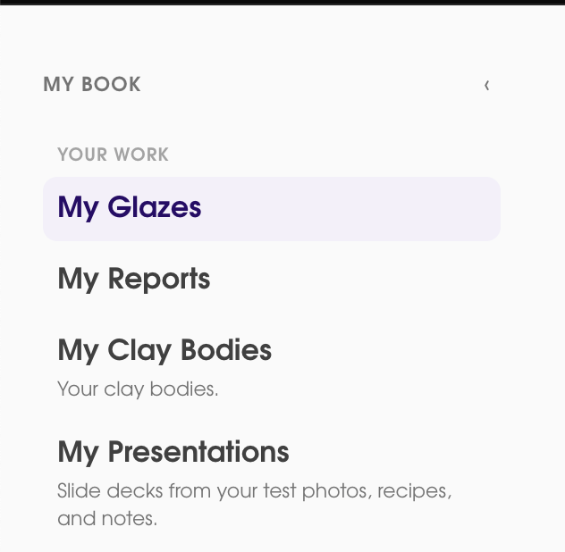
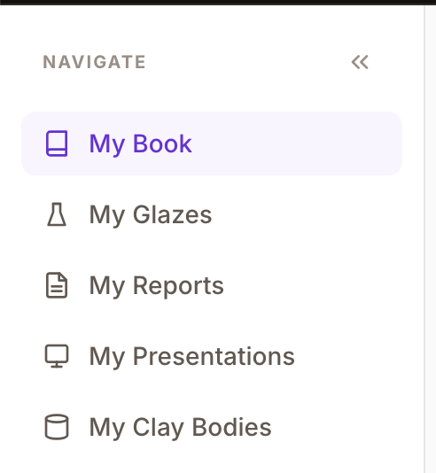

Sidebar
Page: All (sidebar)
#1 Left-hand navigation tweaks
Current

Recommended

- Add a direct link for My Book. "MY BOOK" at the top of the sidebar is currently just a section label — it should be a clickable link that navigates to the My Book shelves page.
- Increase the size of the arrow icon that opens and closes the left-hand menu. The current chevron is too small and hard to click, especially for less tech-savvy users. Recommend at least 20x20px icon with a 32x32px hit target.
- Consider adding icons to the sidebar menu items. Users can quickly associate with icons to drive exploration. Each nav item should have a small (16px) icon to the left of the label (see "Recommended" screenshot for reference).